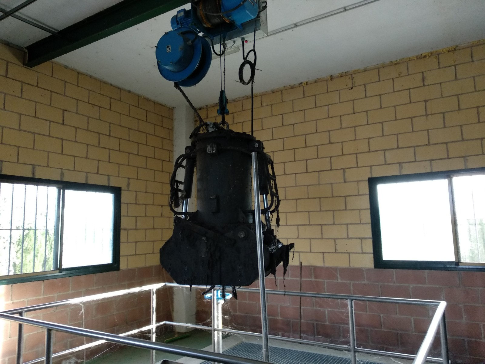
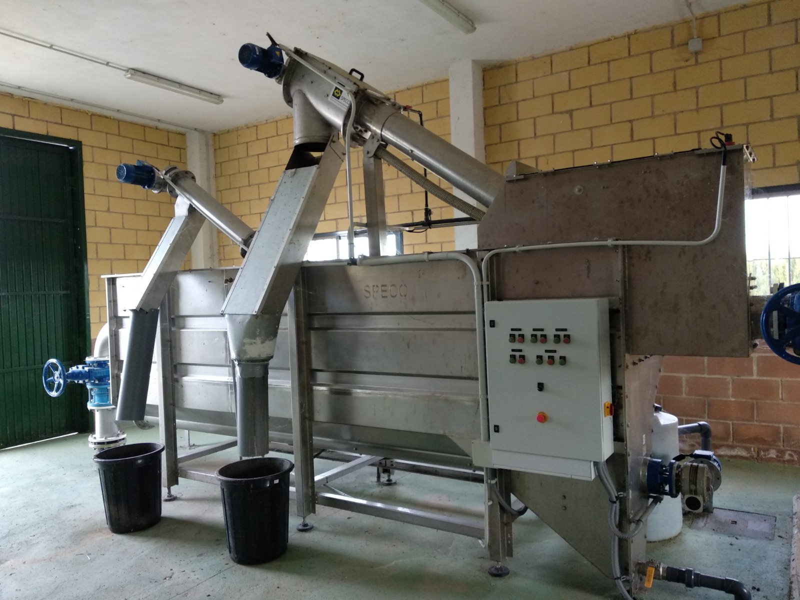
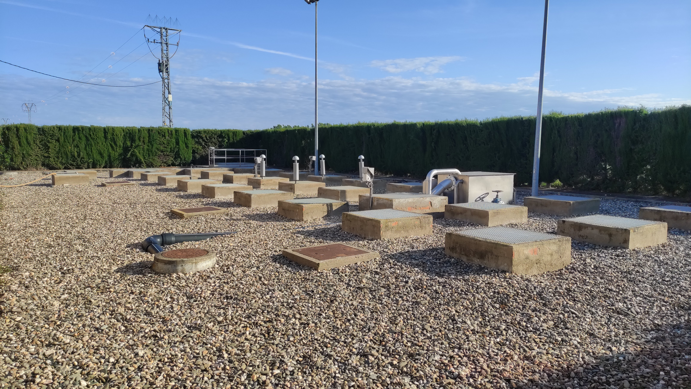
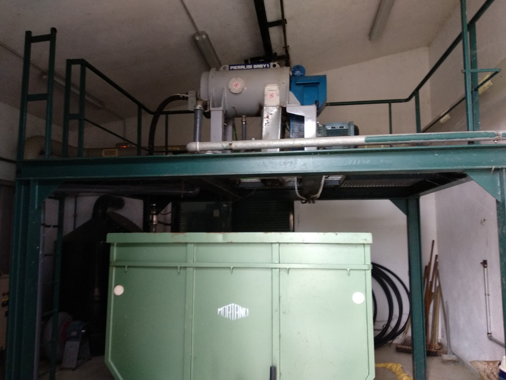
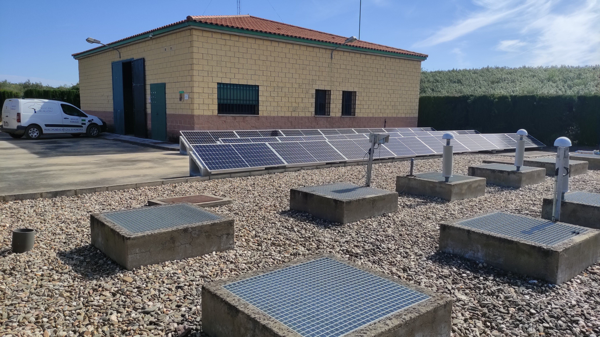
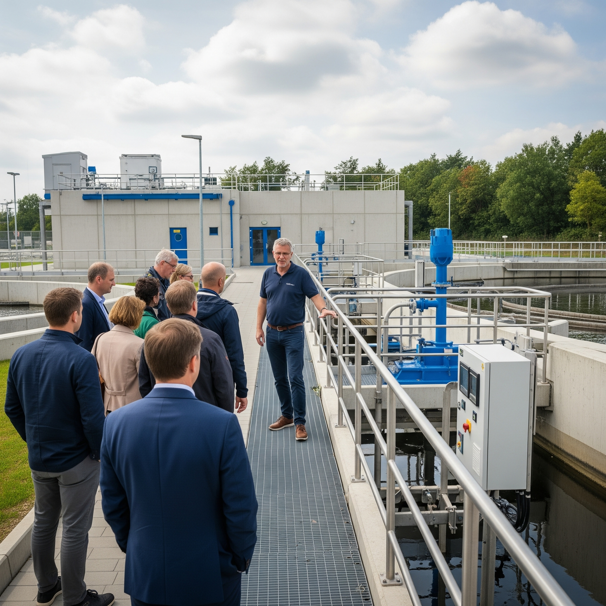
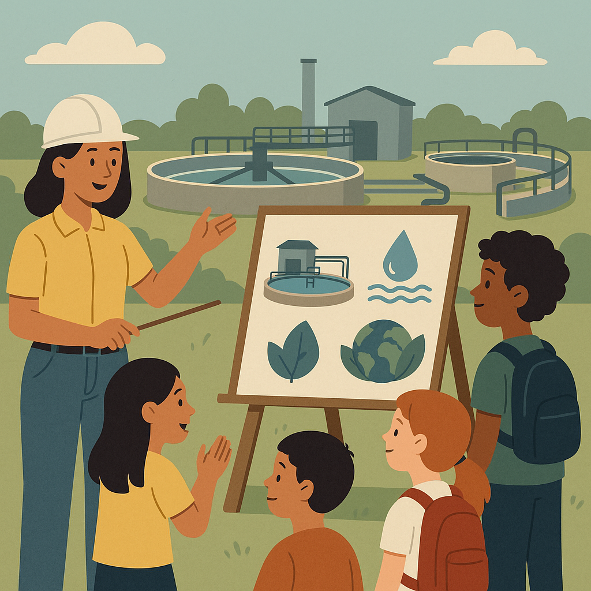
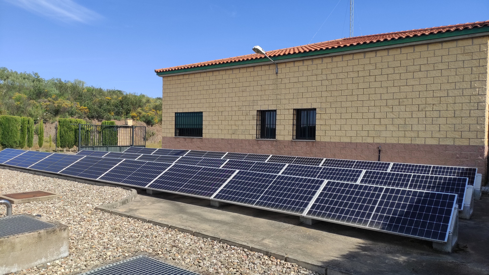
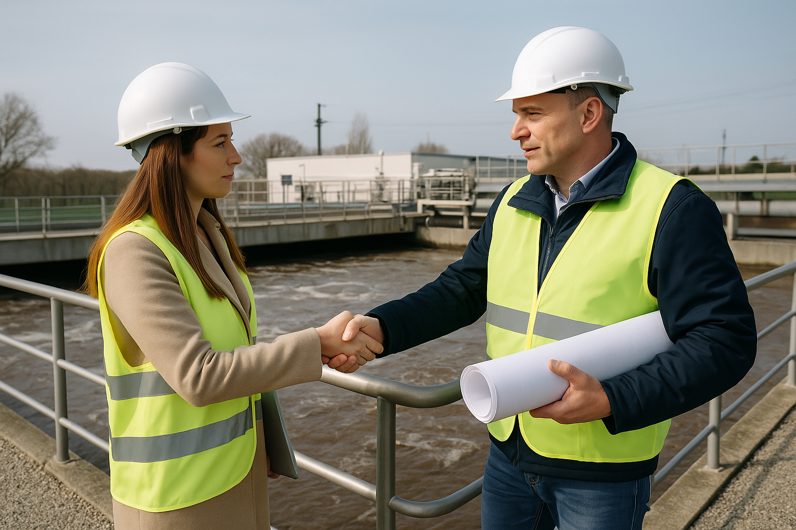

¿Qué trabajo realizan las EDAR? Las Estaciones Depuradoras de Aguas Residuales (EDAR) son instalaciones esenciales para el tratamiento del agua que utilizamos en nuestras actividades diarias, como el agua de hogares, industrias y comercios. Su principal objetivo es limpiar y depurar las aguas residuales antes de devolverlas al medio ambiente, asegurando que cumplan con los estándares de calidad establecidos para proteger los ecosistemas y la salud pública. El proceso de depuración en una EDAR se lleva a cabo en varias etapas: Pretratamiento: En esta etapa inicial, se eliminan los residuos sólidos más grandes, como plásticos, arenas y grasas, que llegan junto con el agua residual.  Tratamiento primario: Aquí se sedimentan las partículas sólidas más pesadas en el fondo, formando lodos que serán tratados posteriormente.  Tratamiento secundario: El agua pasa por procesos biológicos donde microorganismos descomponen la materia orgánica disuelta, reduciendo la contaminación.  Tratamiento terciario (opcional): Este paso, que no siempre es necesario, incluye técnicas avanzadas para eliminar nutrientes como nitrógeno o fósforo, así como para desinfectar el agua mediante luz ultravioleta o cloración. Además, las EDAR juegan un papel crucial en la economía circular, ya que muchas de ellas aprovechan los lodos generados para producir biogás (energía renovable) y abonos orgánicos. Algunas incluso reutilizan el agua depurada para riego o usos industriales.  En resumen, las EDAR son fundamentales para garantizar la sostenibilidad hídrica y proteger nuestros recursos naturales, haciendo posible que el agua siga cumpliendo un ciclo seguro y respetuoso con el medio ambiente. 
¿Qué trabajo realizan las EDAR? Las Estaciones Depuradoras de Aguas Residuales (EDAR) son instalaciones esenciales para el tratamiento del agua que utilizamos en nuestras actividades diarias, como el agua de hogares, industrias y comercios. Su principal objetivo es limpiar y depurar las aguas residuales antes de devolverlas al medio ambiente, asegurando que cumplan con los estándares de calidad establecidos para proteger los ecosistemas y la salud pública. El proceso de depuración en una EDAR se lleva a cabo en varias etapas: Pretratamiento: En esta etapa inicial, se eliminan los residuos sólidos más grandes, como plásticos, arenas y grasas, que llegan junto con el agua residual. Tratamiento primario: Aquí se sedimentan las partículas sólidas más pesadas en el fondo, formando lodos que serán tratados posteriormente. Tratamiento secundario: El agua pasa por procesos biológicos donde microorganismos descomponen la materia orgánica disuelta, reduciendo la contaminación. Tratamiento terciario (opcional): Este paso, que no siempre es necesario, incluye técnicas avanzadas para eliminar nutrientes como nitrógeno o fósforo, así como para desinfectar el agua mediante luz ultravioleta o cloración. Además, las EDAR juegan un papel crucial en la economía circular, ya que muchas de ellas aprovechan los lodos generados para producir biogás (energía renovable) y abonos orgánicos. Algunas incluso reutilizan el agua depurada para riego o usos industriales. En resumen, las EDAR son fundamentales para garantizar la sostenibilidad hídrica y proteger nuestros recursos naturales, haciendo posible que el agua siga cumpliendo un ciclo seguro y respetuoso con el medio ambiente.
Compromiso Social En EDARS Valle del Alagón, asumimos nuestra responsabilidad con la sociedad y el medio ambiente. Nuestro compromiso social se refleja en cada una de nuestras acciones, priorizando la sostenibilidad, la educación ambiental y la mejora continua de nuestras operaciones.  Algunas de nuestras iniciativas clave incluyen: Educación y Concienciación: Realizamos talleres y visitas guiadas a nuestras instalaciones para fomentar la conciencia sobre la importancia del tratamiento de aguas residuales y el cuidado del medio ambiente.  Apoyo a Comunidades Locales: Trabajamos en colaboración con comunidades y organizaciones para promover el acceso a agua limpia y la gestión adecuada de recursos hídricos. Reducción de Huella de Carbono: Implementamos tecnologías sostenibles que minimizan las emisiones de carbono y fomentan la producción de energía renovable mediante el uso de paneles solares.  Cooperación con ayuntamientos: La gestión eficiente de las Estaciones Depuradoras de Aguas Residuales (EDAR) es un pilar fundamental para la salud pública y la preservación del medio ambiente. En este contexto, la colaboración estrecha y continua entre el personal técnico de las EDAR y los ayuntamientos resulta no solo conveniente, sino esencial para garantizar un funcionamiento óptimo y una gestión integrada del ciclo del agua.  Nuestro objetivo es no solo cumplir con los estándares medioambientales, sino también superar las expectativas, demostrando que podemos ser agentes de cambio positivo para la sociedad y el planeta.
Registros En EDARS Valle del Alagón, nos mantenemos al día con las últimas novedades y avances en el tratamiento de aguas residuales, sostenibilidad y medio ambiente. A continuación, compartimos los consumos de las distintas EDAR,s. EDAR ACEITUNA EDAR GUIJO DE GALISTEO EDAR MORCILLO EDAR EL BATÁN EDAR GALISTEO Los datos mostrados son una estimación de los consumos aproximados de las EDARS Valle del Alagón.
Contacto ¿Tienes alguna pregunta, sugerencia o necesitas más información sobre nuestras EDAR y servicios? Estamos aquí para ayudarte. Puedes ponerte en contacto con nosotros a través de los siguientes medios: Dirección: Plaza de España, s/n 10813 Pozuelo de Zarzón, Cáceres, España. Teléfono: 927 44 82 50 Email: residualesvalledelalagon@gmail.com Horario de atención: Lunes a viernes, de 8:00 a 15:00. Redes sociales Síguenos en nuestras redes sociales para estar al día con nuestras actividades, eventos y novedades: www.facebook.com/Mancomunidad-Valle-del-Alagón- www.mancomunidadvalledelalagon.es Información de residuales Enlace a servicios DESCARGA NUESTRA APP ¡Gracias por confiar en EDARS Valle del Alagón! Estamos comprometidos a garantizar la sostenibilidad hídrica y proteger nuestros recursos naturales.